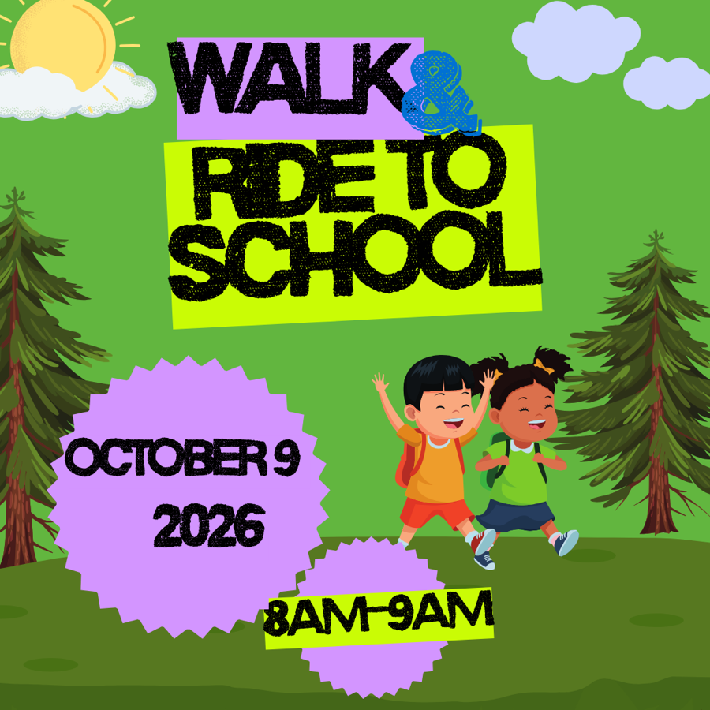

Walk & Ride to School — Friday, October 9, 2026

Hey Eagles! Join us for Walk & Ride to School Day!
We want to celebrate being active on the way to and from school to increase safety and decrease traffic congestion around school. Walking, rolling, biking, busing, and carpooling benefit our community in many ways:
- Students get more exercise and show up to school ready to learn.
- Reduced vehicle emissions mean better air quality around schools.
- Less traffic means safer streets for everyone.
- Sharing the walk with your classmates builds a stronger sense of community.
Arrive between 8:30 and 9:00 a.m.! The event will end by 9:00 a.m. to avoid congestion with the kids coming by bus.
Win a $400 Kirkland Bicycle gift card
Thanks to a generous donation from the City of Kirkland Transportation Division, all participants walking or biking to school will earn an entry into a drawing to receive a $400 gift card to Kirkland Bicycle!
Additionally, all students can earn an entry by printing and reviewing the Franklin Walk & Ride safety activity packet below and completing one activity. The activity must include the student's name and teacher, and be turned in on the day of the event before school!
Download & Print the Safety Activities (PDF)
Volunteer
Questions?
Email kaylat@mybenfranklinpta.org.